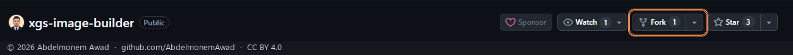
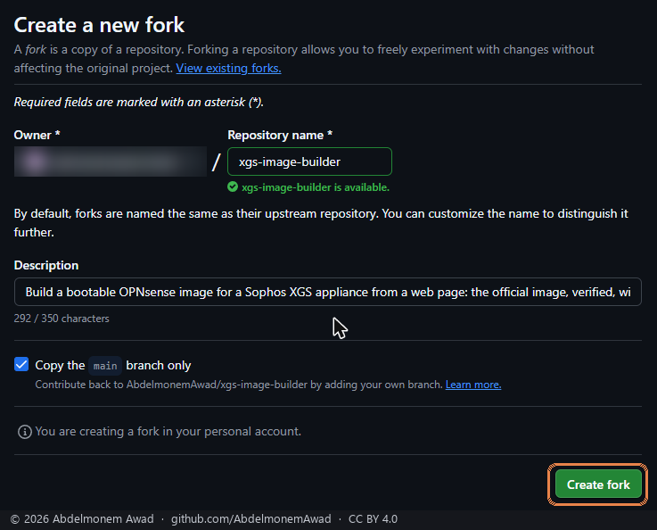
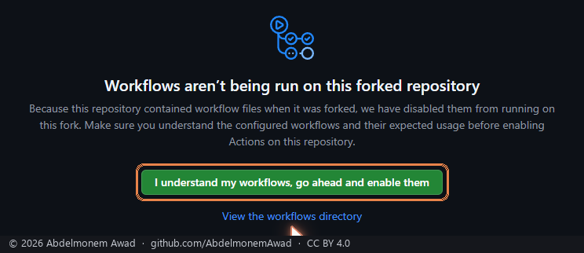
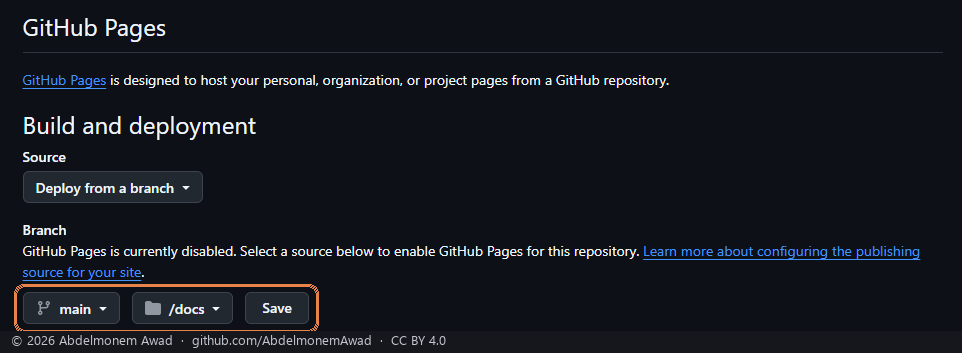

Your own copy, step by step
four steps, once - then this page is yoursA build runs in the account that owns the repository, so your image is built in your own copy of it: your Actions minutes, your artifact, nothing kept by anyone else. The copy brings this page with it, and from your copy it files and builds in your account. If you would rather not do it by hand, Fork and build in my account above does all of it with a token.
-
Fork the repository
Open xgs-image-builder on GitHub, signed in, and press Fork at the top right.

-
Create the fork
Leave the name as it is -
xgs-image-builder- with Copy the main branch only ticked, and press Create fork.
-
Turn on its workflows
GitHub turns workflows off on a new fork. In the fork, open Actions and press I understand my workflows, go ahead and enable them.

-
Publish its page
In the fork, open Settings, then Pages: under Build and deployment, choose the branch
mainand the folder/docs, and press Save. A minute later your page is athttps://your-account.github.io/xgs-image-builder/- this page, building in your account.
Installing the image
- Unpack it. The download is a zip holding one
.img.xz. Unzip it, then decompress the.xz- 7-Zip on Windows,xz -delsewhere - to get the.img. - Write it to a USB stick of 4 GB or more with a raw image writer -
Rufus in DD mode, balenaEtcher, or
dd. Everything on the stick is replaced. - Connect the serial console at the speed chosen on this page - 115200 or 38400 - 8 data bits, no parity, 1 stop bit, no flow control. An image built before 2026-10-16 at 38400 prints its login prompt at 115200; build it again.
- Boot from the stick: put it in a USB port, power on, and choose it in the boot menu or put it first in the boot order.
- The first boot runs from the stick and installs the driver and the
plugins into the running system (the log is
/usr/local/share/xgs-image/firstboot.log). Wait for the login prompt. The front ports are not there yet: the driver is loaded from the next boot on. - Install to the appliance's disk: log in as
installerwith the passwordopnsenseand follow the installer. The disk chosen is erased - on an XGS the internal disk holds the vendor's firmware. When it finishes, take the stick out and reboot. - The first boot from the disk counts thirty seconds down on the
console: "XGS: assigning the front ports by the names on the chassis". Let it run out and
the ports are assigned by the names printed on the chassis; press any key to assign them
by hand from the console menu. Automatically:
- WAN: Port2 on an XGS 3300, Port1 on an XGS 136 - by DHCP;
- LAN: every other front port, an expansion module's included, in one bridge on 192.168.1.1/24 with DHCP;
- MGMT: the management port, where there is one (the XGS 3300's), on 192.168.100.1/24 with DHCP.
- Connect:
https://192.168.1.1from any LAN port, orhttps://192.168.100.1from the management port, and log in asroot/opnsense- then change that password. The management port you installed through answers on 192.168.100.1 from this boot on, not on 192.168.1.1. - Updates: the driver from
System - Firmware - XGS CoprocessorXGS Coprocessor - UpdatesXGS - Updates, which offers its releases; the translation, the layout and the plugins follow their own releases by themselves, once a day.